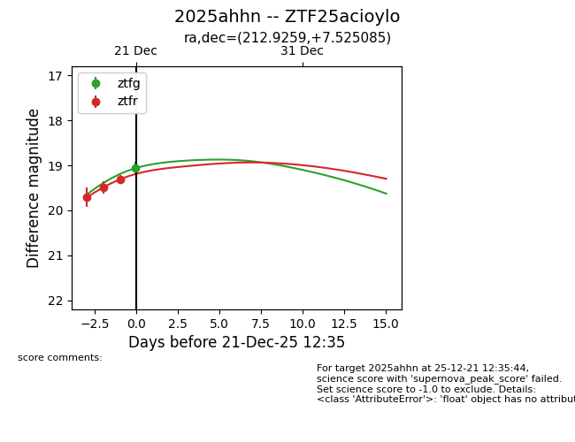
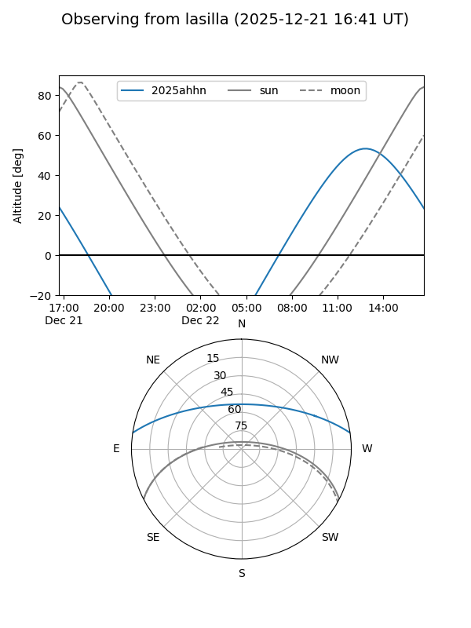
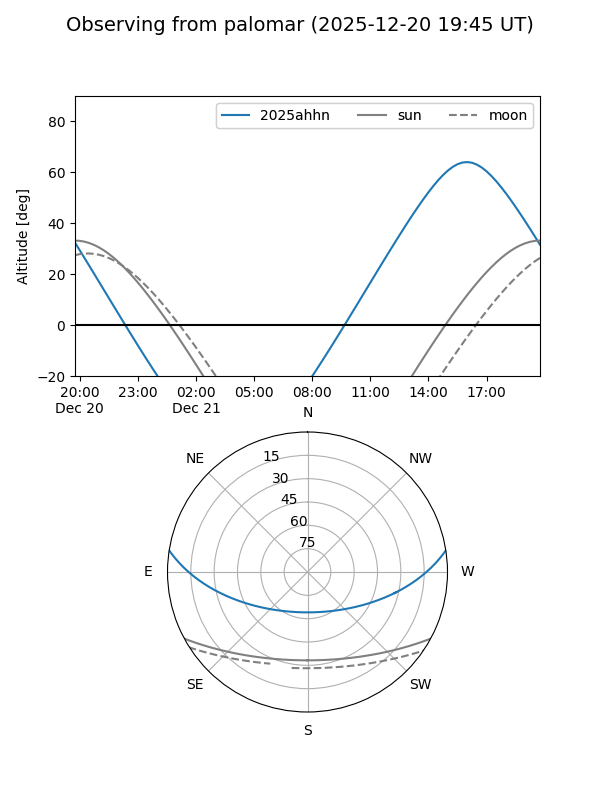
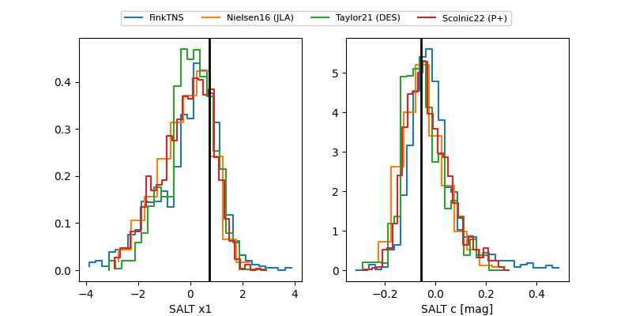

2025ahhn
Target 2025ahhn at 2025-12-18 15:57
Aliases and brokers:
FINK: fink-portal.org/ZTF25acioylo
Lasair: lasair-ztf.lsst.ac.uk/objects/ZTF25acioylo
ALeRCE: alerce.online/object/ZTF25acioylo
TNS: wis-tns.org/object/2025ahhn
YSE: ziggy.ucolick.org/yse/transient_detail/2025ahhn
alt names
ZTF25acioylo (ztf,fink_ztf)
2025ahhn (tns,yse)
Coordinates:
equatorial (ra, dec) = 212.9259,+7.52508
equatorial (HMS+DMS) = 14:11:42.22,+07:31:30.30
galactic (l, b) = (350.7663,+62.68258)
Photometry
last ztfr=19.71
1 ztfr detections
Lightcurve

Visibility


Additional plots
